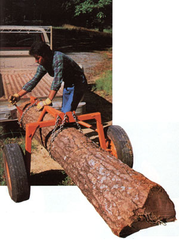

Some heavy loads should be carried rather than dragged... and this carrier suits them to a tee.
To the staffers at MOTHER's Eco-Village, the contraption pictured here is a log hauler . . . and with thousands of linear feet of timber under its belt, so to speak, it would be difficult to contradict that name. But if you don't have occasion to move logs, don't write this simple straddle-wheeler off, because it can come in handy hauling anything from pipe to engine blocks.
As you can see from the photos and drawing, the frame is nothing more than a skeleton made from lengths of 1-1/4" Schedule 40 iron pipe and 1-1/2" and 2" square tubular steel with 1/8" walls (11gauge). Two spindle assemblies cut from the front end of a junked car serve as convenient axles for the wheels (which, together with the brake hubs, were mates to those spindles), and a handoperated cable winch fastened to the top of the frame eases the chore of lifting heavy loads.
Click here for a downloadable enlargement of the construction illustration.
Once the cargo is hoisted well off the ground, belly chains at the front and rear of the steel spine secure the load to the carriage . . . and the entire assembly can be pulled (by hand) or towed to its destination.
The first thing you'll want to do before jumping headlong into this project is to secure the spindle and wheel assemblies. The only prerequisites here are that [1] the spindles include a mount for the backing plate or caliper (you won't be using the brake parts, so don't worry if they're damaged or missing), [2] the brake drums or rotors have bearings and are functional (if you wish, remove the drums entirely, and drive the studs back into the hubs), [3] the wheels are the same size, and [4] the tires hold air.
When you've found the perfect matched pair (it doesn't matter whether the wheels are 13-, 14-, or 15-inchers), ask the scrapyard operator to torch off the steering knuckles close to each spindle mount, in order to make the assembly's rear surface as flat as possible. Then hunt for a 13" X 20" section of 1/4" plate steel and another plate measuring roughly 3/8" X 3-1/4" X 4-1/2", so you'll have enough stock to make the gussets, hangers, and axle plates.
While you're at it, pick up the necessary lengths of pipe, chain, and tubular steeland the other hardware called for in our illustration-and begin planning the layout of the frame. It's important, at this early stage, that you establish the correct angle of the legs so the insides of the tires don't rub against them. In our version, those supports splay outward 7° from perpendicular, and we still had to mount the rims to the hubs inside out to gain the needed clearance. If you want to avoid doing that, increase the angle by whatever it takes to make it work with your set of wheels, or plan on putting spacers behind the spindle assemblies.
Once the rear section is positioned correctly and welded together, you can cut the outside edges of the lower legs to accept the 1/4" X 4-1/2" X 5-1/4" axle plates. After drilling them to match the bolt pattern on the spindles, weld them to the legs so the wheels will have neutral caster and toe-in. Then cut the four 1/4" X 4" X 4" X 6" gussets from the stock and weld them at the corners to strengthen those joints.
The spine meets the front of the cross member at a perpendicular and is held in position with the two 30" lengths of 1-1/4" pipe. Each of these struts should be fastened to a leg at a point about 9-1/2" from the top, and to the spine approximately 2' forward of the main joint. The 3/8" X 2-1/4" X 3-1/4" front hangers are center-drilled with 1/2" holes, then welded to the sides of the spine about 10" behind its forward end.
You'll probably want to make both a towing tongue and a manual-pull handle, either of which will fit into the socket at the front of the spine. The tongue is just an offset affair made from 12", 15", and 48" lengths of 1-1/2" square tubular steel. Four 1/4" X 4-1/2" X 4-1/2" X 6-1/2" plate gussets and two 1/8" X 1-1/2" X 1-1/2" X 6-1/2" tubular corner braces strengthen the butt-welded right-angle joints. A 1-7/8" ball hitch assembly bolts to the front of the lowest 12" tongue stub, over spacers made from a split section of tubular steel.
The handle consists of a 40" length of 1-1/4" pipe cross-drilled at one end and fitted with a hunk of 3/4" rod. The handle and the tongue are interchangeable, and can be pinned in place within the spine with a 1/2" X 2-1/2" machine bolt.
Because the winch needs clearance for its crank handle, it's bolted to a tubular post, which in turn is clamped to the carriage frame cross member. The stanchion and its clamps should be welded to form an inverted letter F, and two lengths of 5/16" threaded rod are used to pinch the clamp members together against the frame. To keep the 10' cable tracking properly, we found it helpful to add a small ring or a single chain link to the edge of the lower clamp beneath the winch drum.
The cable, of course, can't be expected to bear larger loads when the stress is increased by motion, so a 1/4"-thick hanger platemodified with three 3/8" X 1-1/2" notches-is welded to the rear of the tubular cross member. Binding chain can then be used to secure the weight at the rear . . . and at the front, from the side-hangers, if the cargo has some length to it.
For long loads, we found it easiest to winchhoist the payload just behind its balance point, then chain the forward end of the burden snugly against the frame. With that done, the tail end could be lifted to its limit and bound. But a word of caution: Be sure to car ry the majority of the load forward of the spindles, or you run the risk of bouncing the tongue hitch right of its ball.
|
 Long, heavy loads are a cinch for the tubular steel trundle. |
Even loads like this can be moved easily. |
Click here for a downloadable enlargement of this illustration. |